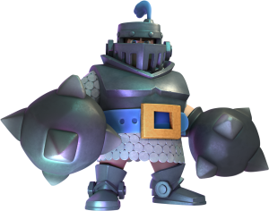
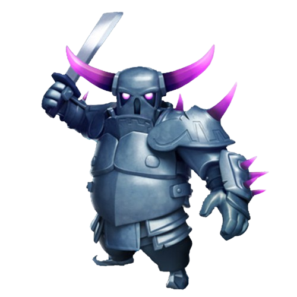

Mega Cavaleiro: o Mega Cavaleiro é uma tropa lendária com dano de entrada em área e salto devastador. Perfeito contra enxames e tropas terrestres, ele combina força e resistência, sendo ideal para contra-ataques e controle de arena.

P.E.K.K.A: a P.E.K.K.A é uma unidade poderosa terrestre com altíssimo dano por acerto. Ideal para eliminar tanques e construir pushes devastadores, exige suporte e posicionamento estratégico por seu custo alto.
Clash Royale é um jogo de estratégia em tempo real da Supercell, onde os jogadores duelam em arenas usando cartas colecionáveis que representam tropas, feitiços e estruturas. O objetivo principal é destruir as torres inimigas, especialmente a torre do rei, garantindo a vitória antes do tempo acabar. A combinação certa de cartas, o posicionamento e o tempo de uso são fundamentais para o sucesso, exigindo raciocínio rápido e planejamento. Diversos streamers e criadores de conteúdo como Orange Juice, Morten e Pompeyo são populares na comunidade, compartilhando dicas, desafios e partidas ao vivo que ajudam jogadores a melhorarem suas habilidades. As estratégias variam de acordo com o estilo de baralho, podendo focar em controle, ataque rápido (cycle) ou defesa com contra-ataque. Clash Royale continua relevante por sua jogabilidade dinâmica e competitiva, além de atualizações constantes e torneios globais que mantêm a comunidade ativa e engajada.